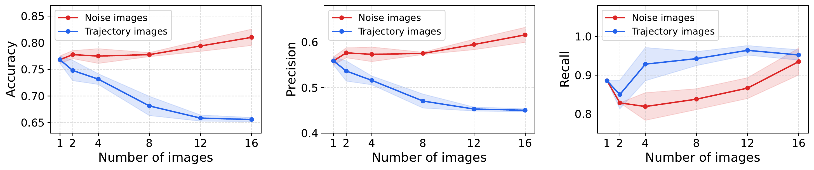
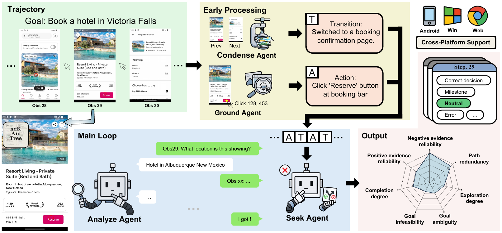

Deciding whether a trajectory actually fulfills its instruction governs how we measure computer-use agents on long-horizon graphical-user-interface tasks and how we train them with reinforcement learning. This judgment has long relied on rule-based evaluation, which struggles to align with human intention and goes stale when an app updates or its online content drifts. Existing model-based judges attempt to address these problems but still leave a performance gap to rule-based evaluation. We propose the SeekJudge framework, in which four role-specialized agents, a Condense, a Ground, a Seek and an Analyze agent, reach a verdict through a Seek–Analyze loop over the trajectory. A seed-calibrated distillation pipeline trains one specialized 9B model to serve as the shared backbone for all four agents. Measured by downstream success rate on held-out RL test goals, SeekJudge is the first practical model-based reward to match or surpass native rule-based supervision in online RL. Beyond accuracy, SeekJudge provides step-level judgments, runs far cheaper than a closed-source large model, and keeps a small per-call context that scales to much longer trajectories.
We revisit what it takes to judge a long trajectory and frame it as the composition of two subtasks: localization, which identifies the image holding the decisive evidence, and extraction, which reads the decisive detail from that image accurately.
We observe that, even when the decisive image is always provided, adding more images from the same trajectory to a single forward pass degrades performance increasingly with their number. Competing content rather than context length drives the drop: as trajectory images accumulate, precision collapses while recall barely moves, so the judge reads accumulating plausible-looking details as evidence of success and the one decisive screenshot is drowned out.

SeekJudge realizes this decomposition as a multi-agent framework whose four agents share one backbone model. The Condense and Ground agents first compress the whole trajectory into a compact timeline. The Seek agent takes this timeline as its initial context and runs a Seek–Analyze loop, querying the Analyze agent over several rounds for the evidence it still needs before emitting the final judgment.

The controller and the only agent that carries state across a run. It reads the condensed timeline and judges whether the accumulated evidence settles the instruction. When it is enough, it emits the verdict; when not, it names a single step and image id to inspect and sends a focused question to the Analyze agent.
Answers one focused question about the single screenshot the Seek agent names and returns the decisive detail as text. It is stateless: every call starts fresh with only that question and image, so it acts as a tool the Seek agent invokes for a detail.
For each step it reads the two screenshots before and after the action and writes a few lines describing the state transition, the T entry of the timeline, turning the whole trajectory into a compact text timeline before the loop begins.
For each step it reads the post-action screenshot together with the raw action the actor
executed, such as click 128,453, and identifies from the screenshot which
element those coordinates actually hit, the A entry of the timeline.
To support step-level evaluation we build CUAStepBench, a human-annotated benchmark of 278 tasks over 177 applications. Every trajectory carries a human verdict, and beyond that verdict each step receives a label. We further build CUAStepBench-Long, a long-horizon extension of 18 trajectories with a mean length of 272 steps and dense human annotation.
Each reward model drives RL training of an actor across three task domains. SeekJudge matches or exceeds native rule-based supervision on test success, and beats the other two model-based frameworks on both training and test reward across both actor backbones and all three environments.
| Reward | Chrome | Impress | OS |
|---|---|---|---|
| Rule-based | 12.75 | 30.43 | 25.56 |
| CUAJudge (GPT-5-mini) | 13.91 | 33.62 | 26.11 |
| OS-Themis | 10.14 | 32.46 | 25.00 |
| SeekJudge | 16.23 | 36.81 | 28.89 |
Training the SeekJudge-9B specialist sharpens the trajectory verdict and the step-level reading together. On CUAStepBench it lifts trajectory F1 over the Qwen3VL-8B base and surpasses the closed-source CUAJudge despite its GPT-5-mini calls.
| Framework | Model | Trajectory F1 | Step F1 |
|---|---|---|---|
| Codex | GPT-5.5 | 77.7 | – |
| CUAJudge | GPT-5-mini | 68.8 | 38.0 |
| CUAJudge | Qwen3VL-8B | 66.9 | 21.3 |
| OS-Themis | Qwen3VL-8B | 59.5 | 15.6 |
| SeekJudge | Qwen3VL-8B | 70.8 | 27.3 |
| SeekJudge | SeekJudge-9B | 74.5 | 38.1 |
@misc{wan2026seekjudge,
author = {Wan, Yang and Zhang, Zhenhao and Wang, Jierui and Zhu, Linchao},
title = {SeekJudge: A Practical Reward Framework for Reinforcement Learning in Computer-Use Agents},
year = {2026},
}